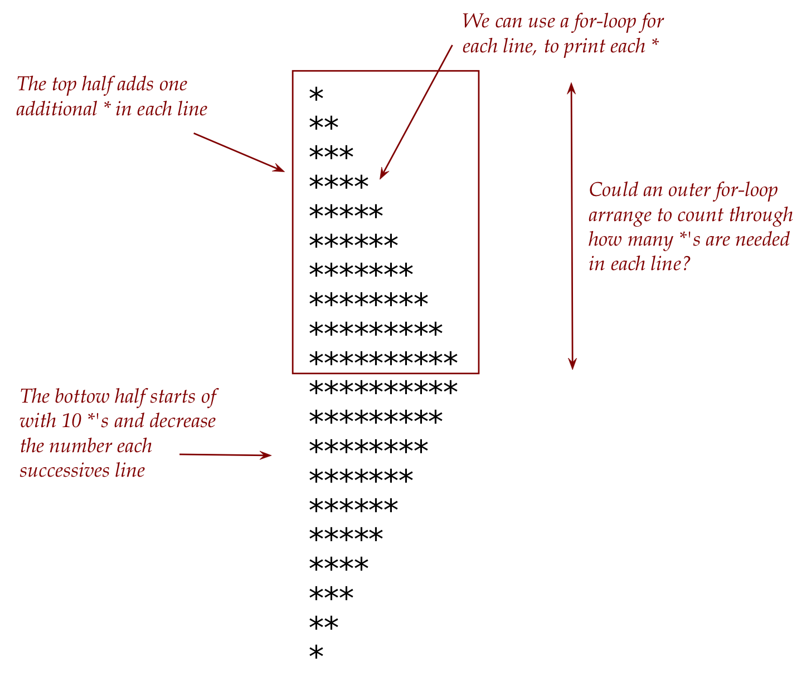

Assignment 1: Problem Solving Example
With a challenging problem, what is often hardest is getting started. Where to begin?
Let’s start by examining the output more closely: 
Let’s try to get the top half of the arrowhead first:
At first, let’s not worry about the details of the start/end of loops.
As a “sketch” (not real code) we could write:
for i in range(... to be determined ...): # Print i *'Next, examine the problem of printing i asterisks on a single line.
If we just had print, say, 7 asterisks on a line, could we write a for-loop to do that?
Does this sketch work?
for j in range(... something to do with 7 ...): print('*')Now let’s work out the range: we want to run from either 1 through 7 (inclusive) or from 0 through 6.
Suppose we pick the 0 through 6 option and write:
for j in range(0,7): print('*')At this point we can try this and see what it does.
A1.1 Exercise:
Write up the above in my_demo_problem1.py. What went wrong? Explain in your assignment1.pdf.
Now let’s generalize to printing a single line of i asterisks:
for j in range(0,i): print('*', end='')Next, we can use this as our inner loop in the overall top-half sketch:
for i in range(... to be determined ...): # Print i *'s for j in range(0,i): print('*', end='')Now let’s determine the range of i (which we might get wrong the first try, but can fix easily).
We sense that the limit is 10. Could the following work?
for i in range(1, 10): # Print i *'s for j in range(0,i): print('*', end='')A1.2 Exercise:
Write up the above in
my_demo_problem2.py. What went wrong? Explain in yourassignment1.pdf.Let’s fix the issue. We need to get to a new line every time the inner loop completes.
Does this work?
for i in range(1, 10): # Print i *'s for j in range(0,i): print('*', end='') print()
A1.3 Exercise:
Write up the above in my_demo_problem3.py. What went wrong?
Next, we’ll fix and write:
for i in range(1, 10): # Print i *'s for j in range(0,i): print('*', end='') print()Does this work?
A1.4 Exercise:
Write up the above in my_demo_problem4.py. What went wrong?
We now have the solution to the top half:
for i in range(1, 11): # Print i *'s for j in range(0,i): print('*', end='') print()Next, let’s tackle the bottom half:
Again, we see that each particular line prints a number of *’s.
As long as we can figure out how many are needed in each line, we can reduce each line by 1.
That suggests an outer loop that starts big and grows small.
Let’s sketch this out as:
# Code for top half here ... # Code for bottom half: for i in range(... to be determined ...): # Print i *'But we already know how to print i *’s because we solved that in the top half:
# Code for top half here ... # Code for bottom half: for i in range(... to be determined ...): # Print i *' for j in range(0,i): print('*', end='') print()So all that’s left is to determine the range of i so that it starts at 10 and goes down to 1.
Since going down in a range requires a negative step, we could write something like
for i in range(10, 1, -1):Clearly, we want to start at 10. But should the range end with 1 or 0? We’ll leave this unanswered for now.
Let’s put it all together:
# Code for top half: for i in range(1, 11): for j in range(0, i): print('*', end='') print() # Code for bottom half: for i in range(10, 1, -1): for j in range(0, i): print('*', end='') print()
A1.5 Exercise:
Write up the above in my_demo_problem5.py. Did it work? Submit your final version in my_arrowhead.py.